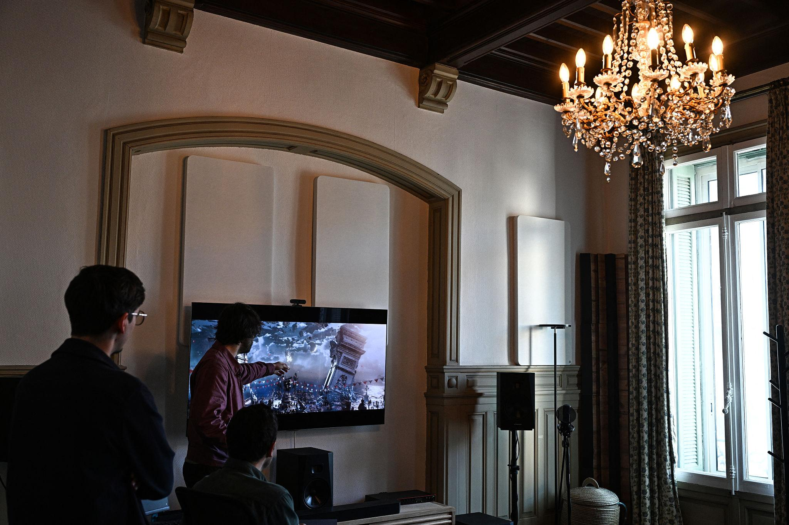
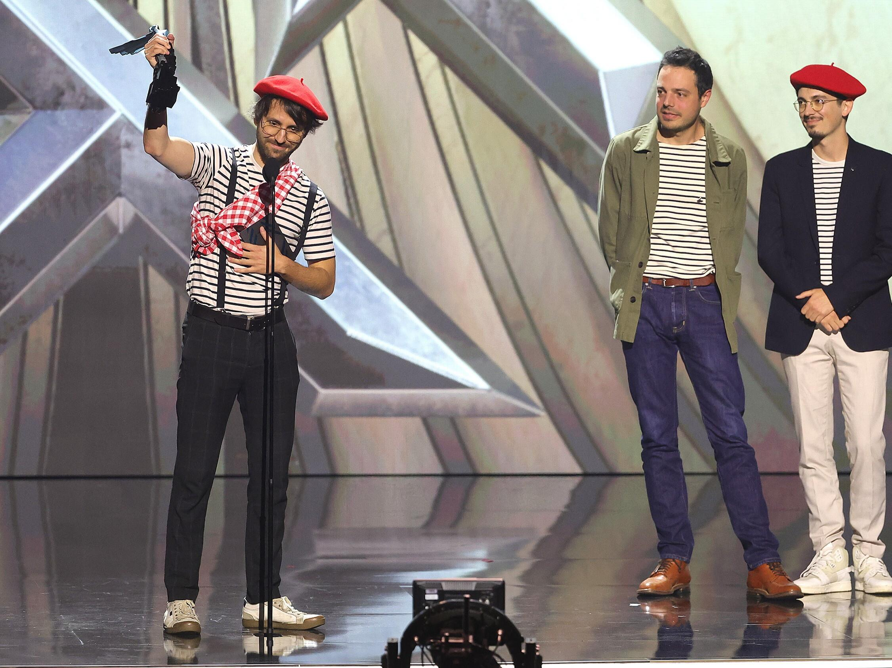
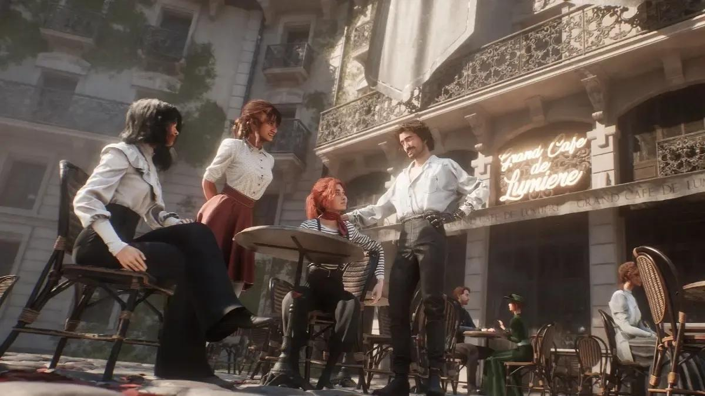

Fondé en France en 2020, Sandfall Interactive est un studio indépendant crée par Guillaume Broche qui s'est concentré sur le développement de jeux vidéo. Dès leur création, ils ont privilégiés la création de jeux ambitieux sans perdre leur liberté créative ainsi que leur souplesse d'avoir une équipe à taille humaine. C'est le point de départ et objectif de ce studio : "Rêver grand, tous ensemble"
Dès ces débuts, basé à Montpellier, le studio se retrouve plutôt limité comparé aux grands studios mais il compense en s'appuyant sur la créativité, la passion, les possibilités offertes par Unreal Engine 5 ainsi que les compétences de leurs différents développeurs, artistes et scénaristes.

Le 24 avril 2025, Sandfall Interactive franchit un grand cap de son histoire avec la sortie de son tout premier jeu vidéo, Clair Obscur: Expedition 33. Après 5 ans de développement, il se distingue par son univers artistique inspiré de la Belle Époque, un scénario émouvant et captivant, sa bande-son accrocheuse et sublime et son système de combat dynamique et sensationnelle. Lors de sa sortie, le succès est immédiat, international et accueilli par la critique comme une véritable prouesse. Dépassant le million de copies vendues en seulement 3 jours, 2 millions en 12 jours et franchissant le cap des 5 millions de ventes en 6 mois.
Suite au succès colossale du jeu, arrive une cérémonie des plus importantes pour le studio français : Les Game Awards, cérémonie qui récompense, à travers divers catégories, les meilleurs jeux vidéo de l'année. Le studio connait alors un succès retentissant avec 9 awards gagnés sur 12 nominations :
Jeu de l'Année (GOTY 2025) -- Meilleure Direction de jeu -- Meilleure Narration -- Meilleur Bande Original et Musique -- Meilleur Jeu de Rôle -- Meilleur Jeu Indépendant -- Meilleur Premier Jeu Indépendant -- Meilleur Performance d'Acteur (Jennifer English)
En quelques mois, Sandfall Interactive passe ainsi du statut de jeune studio indépendant montpelliérain à celui d'acteur reconnu de l'industrie mondiale du jeu vidéo. Son parcours démontre qu'une équipe française à taille humaine peut rivaliser avec les grandes productions internationales grâce à une direction artistique affirmée, une vision créative originale et un projet ambitieux.

Malgré son succès international, Sandfall Interactive reste profondément attaché à ses origines françaises. Installé à Montpellier, le studio revendique une identité artistique inspirée du patrimoine culturel français, particulièrement visible dans Clair Obscur: Expedition 33.
L'univers du jeu puise notamment son inspiration dans la Belle Époque, l'Art déco et l'architecture parisienne. La ville fictive de Lumière, inspirée de Paris, illustre cette volonté de mettre en avant une esthétique française tout en proposant un univers fantastique original.
Fort du succès de son premier jeu, Sandfall Interactive aborde désormais une nouvelle étape de son développement. Sa reconnaissance mondiale lui ouvre de nouvelles perspectives, tout en soulevant un défi majeur : continuer à créer des jeux ambitieux sans perdre son indépendance et son identité créative.
L'avenir du studio reste encore à écrire. Si ses prochains projets n'ont pas été entièrement dévoilés, Sandfall Interactive incarne déjà le potentiel du jeu vidéo français sur la scène internationale et pourrait contribuer à renforcer son rayonnement dans les années à venir.